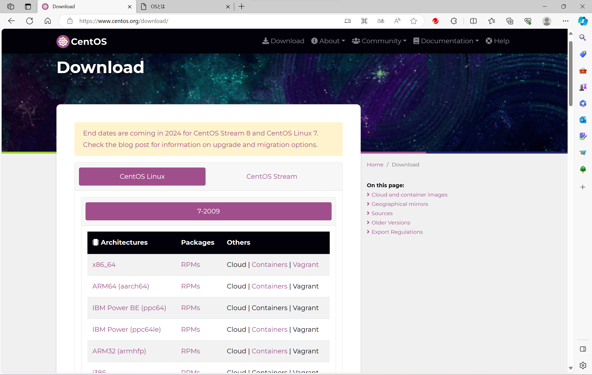

CentOSのダウンロード1
まず https://www.centos.org/download/ ここにアクセス！画面のx86_64をクリック
まず https://www.centos.org/download/ ここにアクセス！画面のx86_64をクリック
ここをタップ！
ここをタップ！ダウンロード開始
ダウンロードが終わったら、virtualboxを起動する。
新規（N）をクリック→名前を「Red」にする→上記の容量にする→作成
設定（S）を選択→ストレージ→空をクリック→右側のCDマークをクリック→ダウンロードしたCentOSを選択
チェックがあるところをクリック→ローカルの標準ディクスの下にチェック→ネットワークとホスト名をクリック→ホスト名をRedにする
→完了インストール→ROOTパスワードクリック→各自で決める→再起動